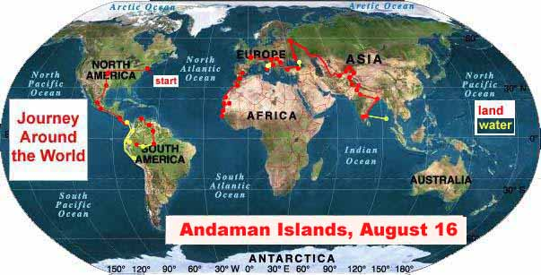

A Journey Around the World
December 2000 through September 2001
Around the world: journalism, videos, journal
Countries visited: USA, Mexico, Guatemala, El Salvador, Honduras, Nicaragua, Costa Rica, Panama, Colombia, Ecuador, Peru, Brazil, Venezuela, Senegal, Mauritania, Morocco, Spain, France, Italy, Croatia, Bosnia, Slovenia, Switzerland, Hungary, Romania, Bulgaria, Turkey, Russia, Kazakstan, Uzbekistan, Turkmenistan, Kyrgyzstan, China, Pakistan, India
The trip so far: Drove from New Jersey to the Panama Canal. Freighter as far as Lima, Peru. Boats down the Amazon from Iquitos, Peru, to Manaus, Brazil. Buses to Caracas, Venezuela. Bush taxis from Dakar, Senegal, to Atar, Mauritania. Four by fours from Nouadhibou, Mauritania, to Dakhla, Morocco. Bus to Marrakesh. Train to Tangier. Ferry to Algeciras, Spain. Buses to Malaga, Spain. Train from Rome to Ancona. Ferry to Split, Croatia. Bus to Sarajevo, Bosnia. Bus to Zagreb, Croatia. Train to Paris. Train back to Zagreb (don't ask). Trains through Hungary, Romania and Bulgaria to Istanbul, Turkey. Bus to Trabzon, Turkey. Ferry to Sochi, Russia. Trains to Moscow. Train to Samarkand, Uzbekistan. Car to Tashkent. Bus to Bishkek, Kyrgyzstan. Cars to Kashgar, China. Buses to Rawalpindi, Pakistan. Train from Delhi, India, to Calcutta. Train to Chennai. Ship to Port Blair, Andaman Islands.Itinerary: North America, Central America, South America, West Africa, Europe, Asia, North America